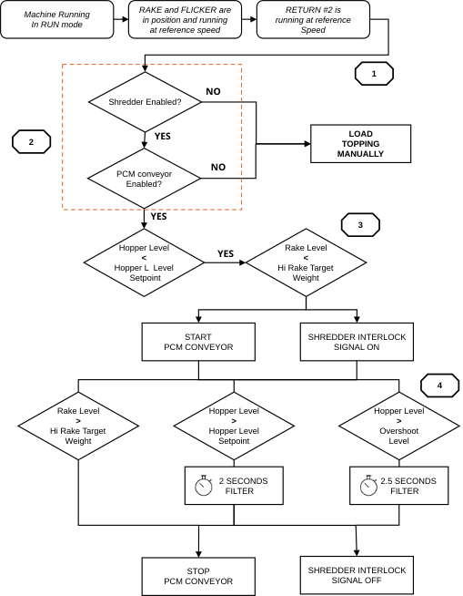
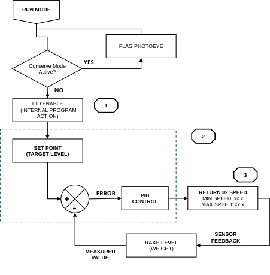
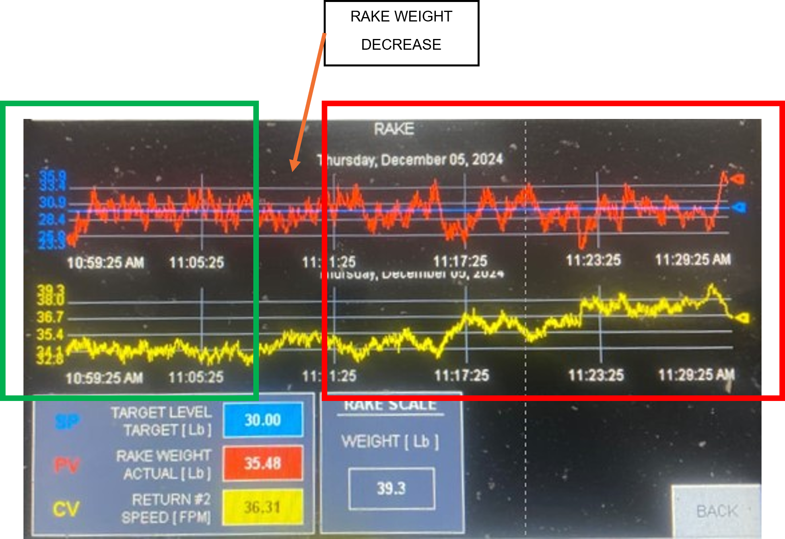
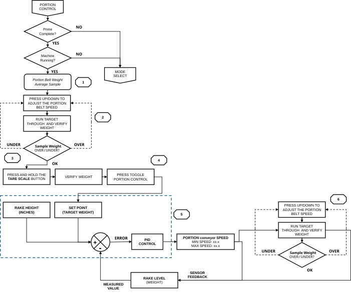

6 Process Control & Tuning¶
6.1 Three Critical System Checkpoints¶
When a weight or consistency problem occurs, work through these checkpoints in order before adjusting any parameters. Most problems originate at Checkpoint 1 or 2.
| Checkpoint | Criteria for Correct Operation |
|---|---|
| 1: HOPPER fill | RETURN #2 flights must be uniformly filled at all times. Each flight holds approximately 1.8 to 2.2 lb of topping. Overfilled flights pack and meter irregularly. Underfilled flights cause the PID to over-accelerate before material reaches the RAKE LOAD CELLS. |
| 2: RAKE weight | RAKE LOAD CELL weight must stay stable at TARGET LEVEL. Weight instability at the RAKE is the most common cause of variation in portions. |
| 3: FLICKER dispersion | The FLICKER must distribute topping evenly across the full target width. Uneven dispersion produces left-to-right weight variation that RAKE weight and PORTION CONVEYOR speed cannot correct. |
6.2 Automated Fill Control (PCM / SHREDDER Option)¶

Fill Start Criteria¶
Both conditions must be met simultaneously:
- HOPPER level is below the HOPPER TARGET value from the active recipe.
- RAKE LOAD CELL weight is below the HIGH-LEVEL threshold.
Fill Stop Criteria¶
Any one of the following stops the fill cycle:
- RAKE LOAD CELL weight reaches or exceeds the HIGH-LEVEL limit.
- HOPPER level exceeds the overshoot-adjusted value (HOPPER TARGET + HOPPER OVERSHOOT HEIGHT) for 2.5 continuous seconds.
- HOPPER level reaches the Stop-Fill threshold for 2 continuous seconds.
Warning
Transport Delay. The RETURN #2 conveyor has an inherent transport delay between the HOPPER and the RAKE LOAD CELLS. The SHREDDER or PCM feed rate must match the Applicator's topping consumption rate. HOPPER OVERSHOOT HEIGHT and HOPPER CUSTOMER LIMITS are set at MAINT → HOPPER.
6.3 Supply and Demand Balance¶
RETURN #2 meters material by volume. At any given speed, each flight carries approximately 1.8 to 2.2 lb of topping and deposits it into the recirculation system once per revolution. Supply rate is the product of flight capacity and belt speed. It cannot change faster than the PID responds.
The production line consumes topping at a fixed rate. RETURN #2 must match that rate continuously. Too little and the Applicator starves. Too much and the RAKE overfills.
The example below uses a three-lane line running 33 targets per lane per minute at 16 oz per target: 99 lb/min total demand. RETURN #2 supply depends on two factors: flight capacity and belt speed.
Underfill¶
Underfill occurs when RETURN #2 cannot deliver enough material to meet demand. Two conditions cause it, and either one stops the system from keeping up.
The first is partially loaded flights. If the HOPPER runs low due to a SHREDDER fault, a PCM gap, or a manual feed interruption, flights arrive partially filled. The PID drives belt speed higher to compensate, but partially empty flights mean effective supply continues to fall regardless of speed. More belt speed cannot fix a starved HOPPER.
The second is the minimum belt speed floor. Even with every flight carrying a full load, RETURN #2 at minimum speed may not deliver enough material if line demand is high. The minimum speed is not a ceiling to avoid. It is a floor that must be exceeded whenever production demand requires it.
In both cases, the RAKE weight drops progressively. When it falls below the LO-LO LEVEL, the Applicator prompts PRIME mode and production stops.
Optimal¶
RETURN #2 runs at the speed that delivers fully loaded flights at exactly the rate the line consumes. The PID holds this speed, making small corrections as RAKE weight drifts. The HOPPER stays at its target level, flights fill consistently, and the topping bed is uniform across the full conveyor width.
Overfill¶
Occurs when the PID commands RETURN #2 faster than the line can consume. The surplus accumulates in the HOPPER. Topping packs under its own weight and flights begin metering inconsistently. Weight variation follows immediately.
For most toppings, keep HOPPER TARGET at or below 6 inches. Above that level, the accumulated weight of topping in the HOPPER compresses the material. What appears to be a full HOPPER is actually a packed mass that does not meter correctly, regardless of what the PID commands. Heavy or dense toppings may require up to 9 inches to keep flights consistently filled, but compaction risk increases above 6 inches. Monitor the bed closely when operating above 6 inches and reduce HOPPER TARGET if weight variation increases.
Note
When setting up a new recipe or a new topping type, confirm that RETURN #2 can run fast enough to meet the line's consumption rate with fully loaded flights. If the belt is running at or near maximum speed and RAKE weight is still falling, the topping supply source (SHREDDER or PCM) is the constraint, not the PID. Contact Grote Service to evaluate the drive speed range for that application.
6.4 RETURN #2 PID Control (RAKE Weight)¶

| Parameter | Value and Function |
|---|---|
| Process Variable (PV) | Two-second rolling average of RAKE LOAD CELL weight. |
| Setpoint (SP) | TARGET LEVEL from the active recipe. |
| Proportional Gain (P) | 0.75: Immediate correction proportional to weight error. |
| Integral Gain (I) | 1.75 / min: Eliminates long-term steady-state deviation. |
| Derivative Gain (D) | 0.003 min: Dampens sudden weight fluctuations. |
| Output | RETURN #2 conveyor speed command, constrained by recipe HIGH LEVEL and LOW LEVEL limits. |
See Section 11.5: RAKE Screen to monitor PID variables in real time.

- The green rectangle shows stable production: RAKE weight holds close to TARGET LEVEL, and RETURN #2 speed runs at a steady, low value. The PID is making only minor corrections.
- The arrow marks the first sign of trouble: RETURN #2 speed begins to climb. At this moment, the RAKE weight may still appear stable, but the PID has already detected a deficit and is commanding the belt to run faster to compensate. A rising RETURN #2 speed trend is an early warning that supply is falling behind demand. If the HOPPER is not replenished, RAKE weight will follow the speed upward and then drop sharply as the HOPPER empties.
- The red rectangle shows what follows: RAKE weight becomes erratic as the PID overcorrects against a starved HOPPER and RETURN #2 speed swings in response. This is the visual signature of a supply problem, not a PID tuning problem.
6.5 PORTION CONVEYOR PID Control (PORTION Weight)¶

Manual Setup and Weight Verification¶
- The Applicator must be in RUN mode with priming complete.
- Run targets through the Applicator. Weigh each after topping application.
- Run approximately 100 targets and verify that weights are stable and consistent before proceeding.
- Use the speed increment/decrement controls on the PORTION screen to adjust PORTION CONVEYOR speed until the applied weight matches the recipe target weight.
- Press and hold TARE SCALE for three seconds. Perform the tare with the PORTION CONVEYOR running and carrying a representative topping load. The current weight and speed are saved as the baseline, and the load cell zeroes out, removing conveyor tare from the measurement.
Enabling PID Portion Control¶
- After the tare is complete and the target weight is verified, press TOGGLE PORTION CONTROL on the PORTION screen.
- The PID loop activates and adjusts PORTION CONVEYOR speed automatically.
Note
If the Applicator enters PRIME mode while PORTION CONTROL is active, PORTION CONTROL is disabled automatically. Re-enable it after priming is complete and the RAKE weight has stabilized at TARGET LEVEL. Do not enable PORTION CONTROL until target weights are stable and consistent. Starting the PID on an unstable baseline causes oscillation. When PORTION CONTROL is turned OFF, or the Applicator exits RUN mode, automatic adjustment stops and PORTION CONVEYOR returns to the recipe baseline speed.
PID Parameters¶
| Parameter | Value and Function |
|---|---|
| Proportional Gain (P) | 0.5: Immediate correction proportional to weight error. |
| Integral Gain (I) | 25 / min: Corrects persistent weight offset over time. |
| Derivative Gain (D) | 0.0: Not used for this process. |
| Output | PORTION CONVEYOR speed command, constrained by recipe min/max limits. |